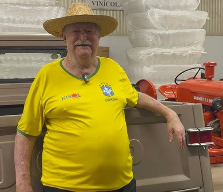
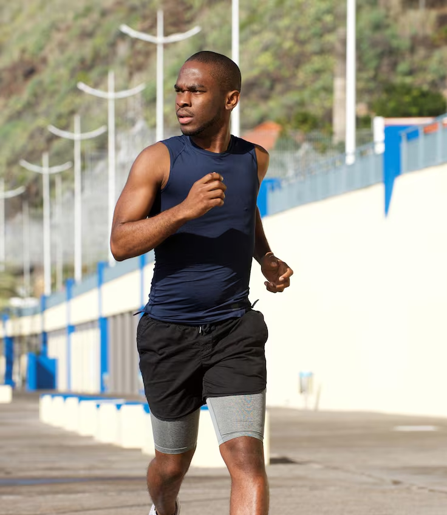

Nosso Impacto
Veja como o Instituto Hand Maria tem transformado vidas através da educação, esporte e cultura.
0
Participantes nos projetos
0
Voluntários engajados
0
Projetos concluídos
0
Bairros alcançadas
Nossa Jornada
- 2025: Expansão dos projetos esportivos e culturais.
- 2023: Início do programa de inclusão digital para jovens.
- 2020: Mais de 10 milhões de atendimentos realizados.
- 2015: Fundação do Instituto Hand Maria.
Histórias que Inspiram
João Silva
"Participei das oficinas de música e hoje sou professor voluntário. O Instituto mudou minha vida."

Maria Oliveira
"Graças ao projeto de inclusão digital, consegui meu primeiro emprego."

Carlos Santos
"As atividades esportivas trouxeram disciplina e esperança para minha comunidade."